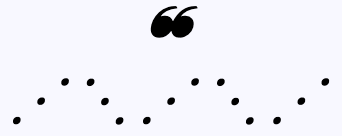

Garthim presents Cube 6, a group exhibition of works on paper from six artists living in the United States taking place in
Los Angeles, California. Garthim fabricated "Cube 6," a modular exhibition cube, for the purpose of assimilating these
artworks into the location where they were installed. Like any legitimate attempt at camouflage, this is sometimes effective
and sometimes much less than that. The wood base of "Cube 6" was fabricated in part using images of Japanese designer Naho
Matsuno's stool and is named after her original design. Images of the original, "Cube 3," can be found here.
We hope you enjoy the exhibition.
Joshua Boulos
Daniel Champion
Jake Fagundo
Nickolas R. Garcia
Anthony Lacerra
Leroy Winter


Daniel Champion


Nickolas R. Garcia


Joshua Boulos


Jake Fagundo


Leroy Winter


Anthony Lacerra


Photography by Justin Ortiz